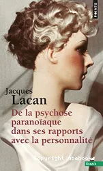

1:09:49 · 11 OPERE
Tutti i problemi sono sempre problemi conoscitivi.
Il filo del discorso
Partendo da una pietra presentata come calcite, Sergio Caldarella si domanda come riconosciamo un oggetto, che cosa renda attendibile una spiegazione e quali condizioni consentano di confrontare giudizi diversi. Il richiamo a Matrix, agli stati di cose di Wittgenstein e allo schema di verità di Tarski prepara una critica della parità epistemica intesa come semplice equivalenza fra interlocutori. Il passaggio dal sogno alla veglia, con Calderón e Platone, amplia la domanda verso il rapporto fra esperienza individuale, controllo condiviso e psicologia del conoscere. La tesi che lega tutti i problemi alla conoscenza guida il percorso, senza essere presentata dalla scheda come una legge dimostrata. Il centro del video è una lettura dei Dialoghi di Confucio: cibo, armi e fiducia del popolo diventano il punto di partenza per discutere consenso e legittimazione politica. Il relatore interpreta il primato della fiducia anche come occasione di controllo psicologico; questa lettura è distinta dal testo del passo XII.7. Seguono un’ampia polemica sui commenti pubblici e sulle rappresentazioni dei conflitti contemporanei, il confronto storico sulle crociate e gli esempi di Plutone e dei termini scientifici. Le valutazioni politiche e le accuse restano attribuite al relatore; la scheda distingue le date riscontrabili dalle analogie e corregge la confusione fra nuclidi di elementi diversi. Nella parte finale la critica dell’autorità puramente formale si intreccia ai libri di Schweitzer, Zoja e Lacan. Il confronto sul termine paranoia richiede di separare una diagnosi individuale dall’uso storico o metaforico di un concetto, senza assegnare patologie a persone e gruppi. La replica di una moneta di Plotina offre un ultimo esempio sul rapporto fra oggetti e interpretazione storica; L’ideologia del lupo e Il tradimento dei chierici accompagnano la conclusione sulla responsabilità intellettuale. Il video termina con un invito allo studio della storia e alla disponibilità a rivedere le proprie idee, che il relatore considera strumenti di autonomia personale.
I libri nel discorso

Matrix (The Matrix,1999)
Locandina del film Matrix1999 dal catalogo digitale: Film1999,regia di Lana e Lilly Wachowski,KeanuReeves,LaurenceFishburne,CarrieAnneMoss. Locandina orizzontale del catalogo digitale,non copertina narrativa o fotogramma della specifica scena citata.
Visti interamente titolo e personaggiNeo,Morpheus,Trinity. Immagine acquisita dal riferimentoog:image della pagina del film; non si attribuisce una edizioneDVD o il1994 a un film uscito nel1999.
Primo Matrix e Morpheus espliciti. La formula sulle quattro lettere è un ricordo del relatore, non una battuta certificata del film; il dialogo della sceneggiatura riscontrata chiede che cosa sia reale.
Passaggio 1:25 ↗ · Fonti e libro ↗
Tractatus logico-philosophicus
Identificazione probabile
Copertina del volume che comprende il Tractatus: Einaudi · Tractatus logico-philosophicus e Quaderni 1914–1916 · 2009
Copertina del volume Einaudi che comprende sia il Tractatus sia i Quaderni 1914–1916. La voce identifica il Tractatus; l’ISBN appartiene al volume contenitore e l’edizione non è accertata nel filmato.
Wittgenstein e il termine Sachverhalt espliciti; rinvio probabile alla terminologia del Tractatus, riscontrata nei §§2 e 2.01. Titolo non pronunciato e definizione della comunicazione non citazione letterale.
Passaggio 2:38 ↗ · Fonti e libro ↗
La vita è sogno (La vida es sueño)
Copertina del volume con il dramma e l’auto sacramental: Adelphi · Piccola Biblioteca 252 · 1990 · a cura di Luisa Orioli
Copertina autentica del volume Adelphi che comprende il dramma La vita è sogno e l’auto sacramental omonimo. La voce riguarda il dramma; il richiamo del relatore non identifica questa edizione italiana.
La vita è sogno e Calderón espliciti nel passaggio su sogno, realtà e giudizio. Nessuna edizione o rappresentazione identificata.
Passaggio 10:32 ↗ · Fonti e libro ↗
Simposio
Copertina: Adelphi · Piccola Biblioteca 81 · 1979
Copertina autentica dell’edizione di riferimento, controllata visivamente. Non identifica l’esemplare letto o citato nel video.
Simposio di Platone esplicito. Il numero125 è dichiarato incerto dal relatore e non corrisponde alla paginazione Stephanus del dialogo. Non viene assegnato arbitrariamente un passo alternativo; §202a usato soltanto per correggere l’asserzione generale sulle opinioni sempre false.
Passaggio 11:35 ↗ · Fonti e libro ↗
Bibbia
Copertina: San Paolo, 2014 · Nuova Versione dai Testi Antichi · edizione di riferimento
Bibbia e significato del sogno espliciti, senza individuazione di un libro o episodio; mantenuto come riferimento generale alla raccolta.
Passaggio 17:40 ↗ · Fonti e libro ↗
Dialoghi (Lunyu)
Copertina: Copertina Einaudi, Piccola biblioteca Einaudi, Nuova serie 325, 2006, traduzione e cura di Tiziana Lippiello, XXXVI + 245 pagine, testo cinese a fronte, ISBN 9788806183660.
Piccola copertina autentica Einaudi, 200 × 350 pixel, grigia con riquadri grigio e giallo, nome Confucio, titolo, curatrice e testo a fronte. La frase è identificata dal contenuto e dai termini cinesi deformati nell’ASR, non da titolo pronunciato. Il confronto riguarda orientamenti etici, non una classificazione clinica o biologica di persone. La richiesta locale al testo cinese ha mostrato una verifica di accesso e non viene dichiarata lettura locale riuscita; il passo è riscontrato nel testo indicizzato.
Analecta e Confucio espliciti, con lettura e commento del passo XII.7 su cibo, armi e fiducia. La versione cinese-inglese descritta non è bibliograficamente identificata. Testo riscontrato nella traduzione accademica Stanford.
Passaggio 22:47 ↗ · Fonti e libro ↗
Filosofia della civiltà (The Philosophy of Civilization / Kulturphilosophie)
Identificazione probabile
Copertina della raccolta completa The Philosophy of Civilization: Prometheus · The Philosophy of Civilization · 1987 · ISBN9780879754037
Riutilizzata la copertina autentica dell’intera raccolta Prometheus già associata ai suoi due saggi nel repertorio. Non è la copertina della sola parte; non è la copertina Fazi e non identifica la specifica copia italiana citata. La raccolta è un contenitore editoriale, non una terza opera autonoma di Schweitzer distinta dai due testi.
Schweitzer e Fazi espliciti; il titolo pronunciato Il disagio della civiltà non coincide con il titolo italiano riscontrato Filosofia della civiltà, Fazi2014. Identificazione probabile dal contesto e dalla bibliografia accademica; non usato il diverso libro di Freud.
Passaggio 55:19 ↗ · Fonti e libro ↗Paranoia. La follia che fa la storia
Copertina: Bollati Boringhieri · nuova edizione 2023 con nuova prefazione dell’autore · ISBN 9788833942117
Copertina autentica della nuova edizione 2023: titolo, autore, indicazione Nuova edizione e marchio Bollati Boringhieri leggibili. La nuova prefazione non costituisce un secondo libro da duplicare. L’edizione illustrativa non è assegnata all’esemplare del video. Originale 2011 ISBN 9788833922447; nuova edizione 2023 ISBN 9788833942117.
Luigi Zoja e Paranoia. La follia che fa la storia espliciti. La frase sulla patologia individuale e la massa è riscontrata nella presentazione sul sito dell’autore; non inventata una pagina interna.
Passaggio 55:58 ↗ · Fonti e libro ↗
Della psicosi paranoica nei suoi rapporti con la personalità
Copertina: Points / Seuil · edizione francese tascabile 2015 · ISBN 9782757853023
Copertina autentica francese presente nel catalogo dei centri di documentazione psichiatrica SantéPsy: titolo e autore coincidono con il record ISBN. È un’edizione illustrativa francese del 2015, non la copertina italiana o l’originale del 1932. Il volume è commercializzato anche con la specificazione Premiers écrits sur la paranoïa: l’opera principale e i testi aggiunti sono distinti, senza crearne una seconda citazione del video.
Titolo e autore espliciti; il relatore lo identifica come tesi e ne richiama la parte storica. È tesi di medicina1932; successive edizioni con scritti aggiunti non costituiscono una nuova opera citata.
Passaggio 56:40 ↗ · Fonti e libro ↗
L’ideologia del lupo
Copertina: Presentazione dell’autore, 2024
L’ideologia del lupo esplicitamente indicato come proprio lavoro sul soggetto individuale; riuso della voce esistente senza nuova edizione dedotta.
Passaggio 1:06:11 ↗ · Fonti e libro ↗
Il tradimento dei chierici (La trahison des clercs)
Copertina: Einaudi · Piccola biblioteca Einaudi · 2012 · prefazione Davide Cadeddu · ISBN 9788806191184
Copertina autentica dell’edizione Einaudi 2012: autore, titolo, sottotitolo Il ruolo dell’intellettuale nella società contemporanea, prefazione Davide Cadeddu e collana sono leggibili. La copertina è acquisita dall’immagine pubblica per ISBN, poi confrontata con i metadati primari della prefazione. Non è attribuita all’esemplare usato nel video.
Julien Benda e Il tradimento dei chierici espliciti. Il nome e la successiva resa francese sono deformati nell’ASR, ma il titolo italiano è riconoscibile; originale e traduzione riscontrati in fonti universitarie.
Passaggio 1:07:09 ↗ · Fonti e libro ↗Minutaggi ricavati da testi automatici, da riascoltare. Le identificazioni probabili sono segnalate accanto ai libri.